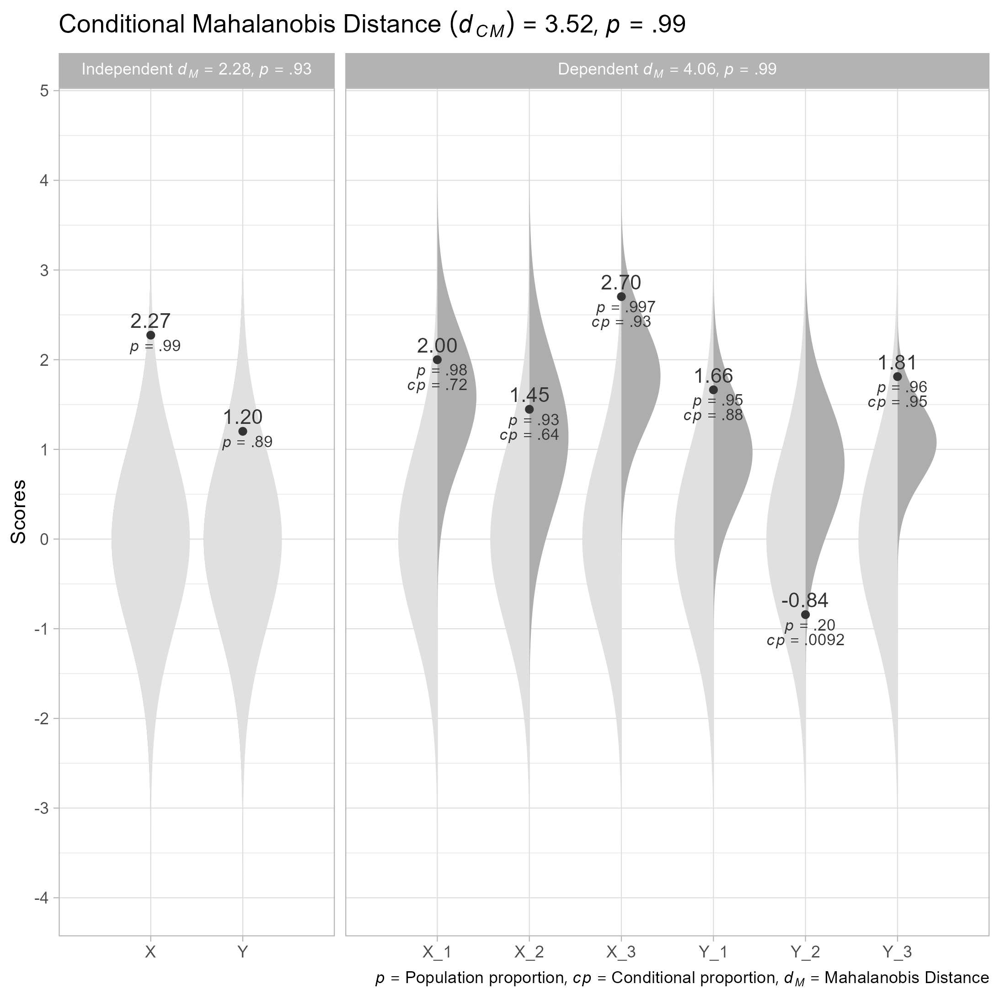

The goal of unusualprofile is to calculate conditional Mahalanobis distances and related statistics. Such statistics can help find cases that are unusual, even after controlling for specified predictors.
Installation
You can install the development version from GitHub with:
# install.packages("remotes")
remotes::install_github("wjschne/unusualprofile")Example
To use the unusualprofile package, all that is needed is to know the correlations, means, and standard deviations among a set of continuous variables and at least one row of data from that set of variables.
Suppose we have set of variables that have the following relationships:

First, we load the unusualprofile package.
Included with the unusualprofile package, the d_example data set has a single row of data generated from the path diagram depicted above.
#> X_1 X_2 X_3 Y_1 Y_2 Y_3 X Y
#> 1 2 1.4 2.7 1.7 -0.84 1.8 2.3 1.2Also included with the unusualprofile package is the path diagram’s model-implied correlation matrix:
R_example
#> X_1 X_2 X_3 Y_1 Y_2 Y_3 X Y
#> X_1 1.00 0.35 0.56 0.34 0.29 0.38 0.70 0.42
#> X_2 0.35 1.00 0.40 0.24 0.21 0.27 0.50 0.30
#> X_3 0.56 0.40 1.00 0.38 0.34 0.43 0.80 0.48
#> Y_1 0.34 0.24 0.38 1.00 0.56 0.72 0.48 0.80
#> Y_2 0.29 0.21 0.34 0.56 1.00 0.63 0.42 0.70
#> Y_3 0.38 0.27 0.43 0.72 0.63 1.00 0.54 0.90
#> X 0.70 0.50 0.80 0.48 0.42 0.54 1.00 0.60
#> Y 0.42 0.30 0.48 0.80 0.70 0.90 0.60 1.00
Using the cond_maha function
We can specify the correlations (R), means (mu), standard deviations (sigma). independent variables (v_ind), and dependent variables (v_dep). In this case, the independent variables are composite scores summarizing the dependent variables.
# Conditional Mahalanobis distance
cm <- cond_maha(data = d_example,
R = R_example,
mu = 0,
sigma = 1,
v_ind_composites = c("X", "Y"),
v_dep = c("X_1", "X_2", "X_3",
"Y_1", "Y_2", "Y_3"))
cm
#> Conditional Mahalanobis Distance = 3.5167, df = 4, p = 0.9852
# Plot
plot(cm)